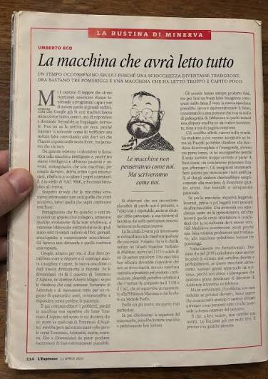

I fell for a fake Umberto Eco.
October 2026
The Interface | Technology, Institutions, Society

I fell for a fake Umberto Eco.
It came as a photo of a newspaper page, showing a 2010 column, supposedly by Eco (a famous Italian philosopher and writer), imagining a machine that answers questions in plain language. The text said that the truly interesting machine is the one that simply continues a sentence. Ask it about a medieval philosopher who never existed and it gives you the dates of his treatise, the library that holds the manuscript, and a perfectly formed shelfmark; ask it for a school essay and the students will tell it to add a few mistakes to make it "real".
I used to read Umberto Eco's articles, and his books too. I loved how he could sum up a problem, a social trend, a human flaw or an embarrassingly stupid way of thinking in a few lines. I would have sworn I could tell a machine's writing from a good writer's.
Well, guys, I was desperately wrong!
The article appears to be a fake: a journalist who looked into it found no trace of such a column anywhere, and argues it was probably produced with an AI that had read a great deal of Eco. The text ends up describing itself: a learned document about something that does not exist, complete with a date, a newspaper and a page.
What I keep thinking about is how little the text itself could tell me. Every sentence was plausible. The ideas were exactly the kind Eco would have had. The only way to find out was to ask where it came from: who published it first, whether any archive holds it, why nobody had quoted it since 2022. Those questions are easy to skip when a page confirms what you already thought, and it convinced me because it said what I half believed.
We should treat what we read online like a hypothesis: something to test before believing it. And we should teach young people to do the same. For a long time newspapers and archives did part of this checking for us. I am not sure we have replaced them…
When did something last look completely convincing to you and turn out to be false? How did you find out?
#InterfaceTechInstitutionsSociety #AILiteracy #CriticalThinking
The fake: The fake Umberto Eco article